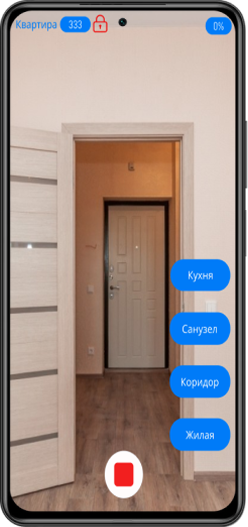
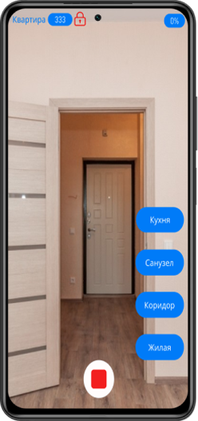

СтройКонтроль
упростите строительный контроль. Программа всё сделает за вас.
Автоматизируйте процесс оценки готовности отделки квартир и мест общественного пользования
 

Автоматическое определение местоположения
С помощью датчиков, установленных в телефоне, и информации в базе данных определяется текущее местоположения обходчика.
Автоматически определяются: жилой комплекс, дом, секция, этаж и квартира
Кросс-платформенность
Произведите видеосъёмку в нашем приложении и посмотрите полученную информацию на любом удобном устройстве:
на телефоне через мобильное приложение;
на любом другом устройстве через сайт.
Интерфейс для каждого
Интуитивно понятный интерфейс позволяет не тратить много ресурсов на внедрение и обучение сотрудников. Начать работать с программой можно самостоятельно.